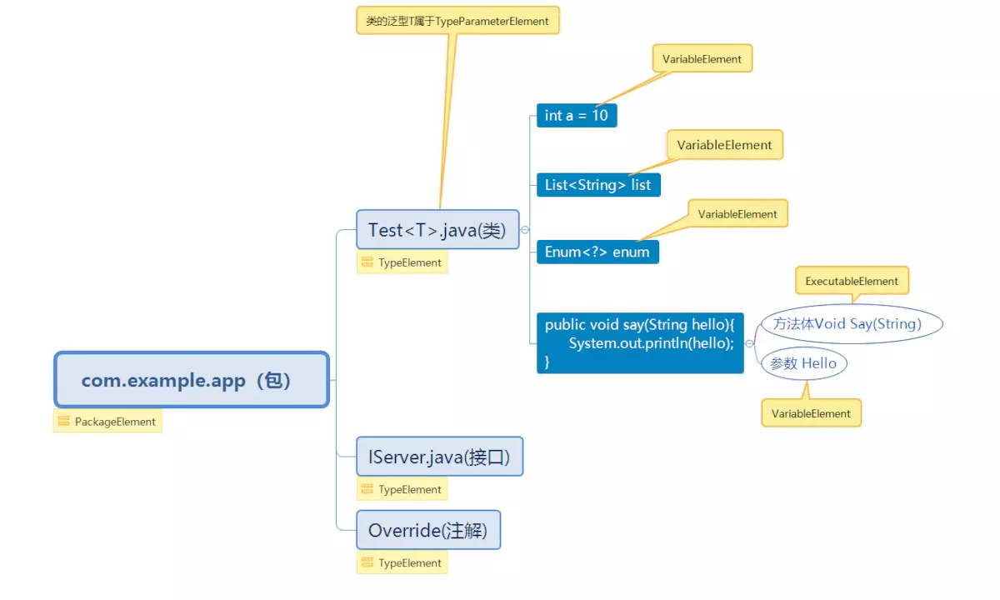

概述
运行时注解：通过反射在运行时动态处理注解的逻辑
编译时注解：通过注解处理器在编译期动态处理相关逻辑
使用代码自动生成，一是为了提高编码的效率，二是避免在运行期大量使用反射，通过在编译期利用反射生成辅助类和方法以供运行时使用。
基础知识 Java 提供了 4 种注解负责新注解的创建：
@Target: 表示该注解可以用于什么地方，可选的ElementType参数有：
CONSTRUCTOR：构造器的声明
FIELD：域声明（包括enum实例）
LOCAL_VARIABLE：局部变量声明
METHOD：方法声明
PACKAGE：包声明
PARAMETER：参数声明
TYPE：类、接口（包括注解类型）或enum声明
@Retention: 表示需要在什么级别保存该注解信息。可选的RetentionPolicy参数包括：
SOURCE：注解将被编译器丢弃
CLASS：注解在class文件中可用，但会被VM丢弃
RUNTIME：VM将在运行期间保留注解，因此可以通过反射机制读取注解的信息。
@Document: 将注解包含在Javadoc中
@Inherited: 允许子类继承父类中的注解
元素要么有默认值，要么在使用注解的时候提供元素的值，且元素不能使用 null 作为默认值，注解在只有一个元素且该元素的名称是value的情况下，在使用注解的时候可以省略“value=”，直接写需要的值即可。
实例
1 2 3 4 5 6 7 8 9 10 11 @Retention(RetentionPolicy.SOURCE) @Target(ElementType.FIELD) public @interface Status { int STATUS_1 = 1 ; int STATUS_2 = 2 ; String value () default "hearing" ; int status () }
注解处理器 注解处理器的处理步骤：
在java编译器中构建；
编译器开始执行未执行过的注解处理器；
循环处理注解元素(Element)，找到被该注解所修饰的类，方法，或者属性；
生成对应的类，并写入文件；
判断是否所有的注解处理器都已执行完毕，如果没有，继续下一个注解处理器的执行(回到步骤1)。
自定义注解在一些优秀的三方库（如：EventBus，ButterKnife等）中很常见，用于简化我们的代码，可以通过编译时解析注解生成.class类，统一去处理，所以学习自定义注解还是很有必要的。示例代码如下：
CustomAnnotation注解：
1 2 3 4 @Target(ElementType.METHOD) @Retention(RetentionPolicy.RUNTIME) public @interface CustomAnnotation {}
CustomProcessor注解处理器：
1 2 3 4 5 6 7 8 9 10 11 12 13 14 15 16 17 18 19 20 21 22 23 24 25 26 27 28 29 30 31 32 33 34 35 36 37 38 39 40 41 42 43 @AutoService(Processor.class) public class CustomProcessor extends AbstractProcessor private static final String CUSTOM_OPTION = "CustomAnnotation" ; private Types typeUtils; private Elements elementUtils; private Filer filer; private Messager messager; @Override public synchronized void init (ProcessingEnvironment processingEnv) super .init(processingEnv); typeUtils = processingEnv.getTypeUtils(); elementUtils = processingEnv.getElementUtils(); filer = processingEnv.getFiler(); messager = processingEnv.getMessager(); } @Override public Set<String> getSupportedAnnotationTypes () return Collections.singleton(Builder.class.getCanonicalName()); } @Override public Set<String> getSupportedOptions () return Collections.singleton(CUSTOM_OPTION); } @Override public SourceVersion getSupportedSourceVersion () return SourceVersion.RELEASE_8; } @Override public boolean process (Set<? extends TypeElement> annotations, RoundEnvironment roundEnvironment) } }
注册注解处理器：
方式一：
新建res文件夹，目录下新建META-INF文件夹，目录下新建services文件夹，目录下新建javax.annotation.processing.Processor文件，然后将自定义注解处理器的全类名写到此文件。
方式二：
添加依赖：com.google.auto.service:auto-service:xxx
在注解处理器上添加@AutoService(Processor.class)注解
ProcessingEnvironment 抽象类中有一个init方法，这是Processor接口中提供的一个方法，当我们编译程序时注解处理器工具会调用此方法并且提供实现ProcessingEnvironment接口的对象作为参数。
1 2 3 4 @Override public synchronized void init (ProcessingEnvironment processingEnvironment) super .init(processingEnvironment); }
可以使用ProcessingEnvironment获取一些实用类以及获取选项参数等：
方法
说明
Elements getElementUtils()
返回实现Elements接口的对象，用于操作元素的工具类。
Filer getFiler()
返回实现Filer接口的对象，用于创建文件、类和辅助文件。
Messager getMessager()
返回实现Messager接口的对象，用于报告错误信息、警告提醒。
Map<String,String> getOptions()
返回指定的参数选项。
Types getTypeUtils()
返回实现Types接口的对象，用于操作类型的工具类。
Element 概述 Element元素是一个接口，表示一个程序元素，比如包、类或者方法。

Element所代表的元素只在编译期可见，用于保存元素在编译期的各种状态，而Type 所代表的元素是运行期可见，用于保存元素在运行期的各种状态。以下元素类型接口全部继承自Element接口：
类型
说明
ExecutableElement
表示某个类或接口的方法、构造方法或初始化程序（静态或实例），包括注解类型元素。
PackageElement
表示一个包程序元素。提供对有关包及其成员的信息的访问。
TypeElement
表示一个类或接口程序元素。提供对有关类型及其成员的信息的访问。注意，枚举类型是一种类，而注解类型是一种接口。
TypeParameterElement
表示一般类、接口、方法或构造方法元素的形式类型参数。
VariableElement
表示一个字段、enum 常量、方法或构造方法参数、局部变量或异常参数。
方法 accept
<R, P> R accept(ElementVisitor<R, P> v, P p)：接收一个ElementVisitor类，它的作用类似于一个if(element instanceof ExecutableElement) 则调用 visitExecutable(ExecutableElement executableElement, Void aVoid)。如果需要接收accept方法的返回值，则根据返回值的类型定义R，P基本上是用不到的，写Void就行。
1 2 3 4 5 6 7 8 9 10 11 12 13 14 15 16 17 18 19 20 element.accept(new SimpleElementVisitor7<Void, Void>() { @Override public Void visitType (TypeElement typeElement, Void aVoid) return super .visitType(typeElement, aVoid); } @Override public Void visitExecutable (ExecutableElement executableElement, Void aVoid) return super .visitExecutable(executableElement, aVoid); } @Override public Void visitPackage (PackageElement packageElement, Void aVoid) return super .visitPackage(packageElement, aVoid); } }, null );
asType
TypeMirror asType()：返回一个TypeMirror是元素的类型信息，包括包名，类(或方法，或参数)名/类型，在生成动态代码的时候，我们往往需要知道变量/方法参数的类型，以便写入正确的类型声明。
1 2 3 4 5 6 7 8 9 10 11 12 13 14 15 16 17 18 19 20 21 22 23 24 25 26 for (Element element : elements) { if (element instanceof TypeElement) { TypeName typeName = ClassName.get(element.asType()); TypeSpec typeSpec = TypeSpec.classBuilder("GenerateTest" ) .addField(typeName, "test" ) .addTypeVariable(TypeVariableName.get(((TypeElement) element).getTypeParameters().get(0 ))) .build(); try { JavaFile.builder("com.test" , typeSpec) .build() .writeTo(processingEnv.getFiler()); } catch (IOException e) { e.printStackTrace(); } } } package com.hearing;import com.hearing.Test;class GenerateTest <T > Test<T> test; }
getAnnotation
<A extends Annotation> A getAnnotation(Class<A> annotationType)：根据传入的注解类型获取该元素上的注解。
getAnnotationMirrors
List<? extends AnnotationMirror> getAnnotationMirrors()：获取该元素上的注解的类型信息，AnnotationMirror类似于TypeMirror。
getEnclosedElements
List<? extends Element> getEnclosedElements()：返回该元素直接包含的子元素，通常对一个PackageElement而言，它可以包含TypeElement；对于一个TypeElement而言，它可能包含属性VariableElement，方法ExecutableElement。
getEnclosingElement
Element getEnclosingElement()：返回包含该Element的父Element，与上一个方法相反，VariableElement，方法ExecutableElement的父级是TypeElemnt，而TypeElemnt的父级是PackageElment等。
getSimpleName
Name getSimpleName()：获取名字，不带包名
getModifiers
Set<Modifier> getModifiers()：获取修饰关键字，public static final等关键字。
getKind
ElementKind getKind()：返回Element的类型，判断是哪种Element。如果我们要判断一个元素的类型，应该使用Element.getKind()方法配合ElementKind枚举类进行判断。尽量避免使用instanceof进行判断，因为比如TypeElement既表示类又表示一个接口，这样判断的结果可能不是你想要的。例如我们判断一个元素是不是一个类：
1 2 3 4 5 6 if (element instanceof TypeElement) { } if (element.getKind() == ElementKind.CLASS) { }
下表为ElementKind枚举类中的部分常量:
类型
说明
PACKAGE
一个包。
ENUM
一个枚举类型。
CLASS
没有用更特殊的种类（如 ENUM）描述的类。
ANNOTATION_TYPE
一个注解类型。
INTERFACE
没有用更特殊的种类（如 ANNOTATION_TYPE）描述的接口。
ENUM_CONSTANT
一个枚举常量。
FIELD
没有用更特殊的种类（如 ENUM_CONSTANT）描述的字段。
PARAMETER
方法或构造方法的参数。
LOCAL_VARIABLE
局部变量。
METHOD
一个方法。
CONSTRUCTOR
一个构造方法。
TYPE_PARAMETER
一个类型参数。
TypeMirror 概述 Element.asType()返回一个TypeMirror类型。
TypeMirror是一个接口，表示 Java 编程语言中的类型。这些类型包括基本类型、声明类型（类和接口类型）、数组类型、类型变量和 null 类型。还可以表示通配符类型参数、executable 的签名和返回类型，以及对应于包和关键字 void 的伪类型。以下类型接口全部继承自TypeMirror接口：
类型
说明
ArrayType
表示一个数组类型。多维数组类型被表示为组件类型也是数组类型的数组类型。
DeclaredType
表示某一声明类型，是一个类 (class) 类型或接口 (interface) 类型。这包括参数化的类型（比如 java.util.Set<String>）和原始类型。TypeElement 表示一个类或接口元素，而 DeclaredType 表示一个类或接口类型，后者将成为前者的一种使用（或调用）。
ErrorType
表示无法正常建模的类或接口类型。
ExecutableType
表示 executable 的类型。executable 是一个方法、构造方法或初始化程序。
NoType
在实际类型不适合的地方使用的伪类型。
NullType
表示 null 类型。
PrimitiveType
表示一个基本类型。这些类型包括 boolean、byte、short、int、long、char、float 和 double。
ReferenceType
表示一个引用类型。这些类型包括类和接口类型、数组类型、类型变量和 null 类型。
TypeVariable
表示一个类型变量。
WildcardType
表示通配符类型参数。
同样，如果我们想判断一个TypeMirror的类型，应该使用TypeMirror.getKind()方法配合TypeKind枚举类进行判断。尽量避免使用instanceof进行判断，因为比如DeclaredType既表示类 (class) 类型又表示接口 (interface) 类型，这样判断的结果可能不是你想要的。
TypeKind枚举类中的部分常量:
类型
说明
BOOLEAN
基本类型 boolean。
INT
基本类型 int。
LONG
基本类型 long。
FLOAT
基本类型 float。
DOUBLE
基本类型 double。
VOID
对应于关键字 void 的伪类型。
NULL
null 类型。
ARRAY
数组类型。
PACKAGE
对应于包元素的伪类型。
EXECUTABLE
方法、构造方法或初始化程序。
Filer Filer支持通过注解处理器创建新文件。
对于生成Java文件，还可以使用Square公司的开源类库JavaPoet。
Messager Messager接口提供注解处理器用来报告错误消息、警告和其他通知的方式。
Options getSupportedOptions方法用于设置一些可以被注解处理器支持的选项。
在注解处理器中重写getSupportedOptions方法指定支持的选项参数名称。通过getOptions方法获取选项参数值。
1 2 3 4 5 6 7 8 9 10 11 12 13 14 15 16 17 18 19 20 21 public static final String CUSTOM_ANNOTATION = "hearingCustomAnnotation" ;@Override public boolean process (Set<? extends TypeElement> annotations, RoundEnvironment roundEnv) try { String resultPath = processingEnv.getOptions().get(CUSTOM_ANNOTATION); if (resultPath == null ) { return false ; } } catch (Exception e) { e.printStackTrace(); } return true ; } @Override public Set<String> getSupportedOptions () return Collections.singleton(CUSTOM_ANNOTATION); }
process process方法提供了两个参数，第一个是我们请求处理注解类型的集合（也就是我们通过重写getSupportedAnnotationTypes方法所指定的注解类型），第二个是有关当前和上一次循环的信息的环境。返回值表示这些注解是否由此 Processor 声明，如果返回 true，则这些注解已声明并且不要求后续 Processor 处理它们；如果返回 false，则这些注解未声明并且可能要求后续 Processor 处理它们。
1 2 public abstract boolean process (Set<? extends TypeElement> annotations, RoundEnvironment roundEnv)
RoundEnvironment 我们可以通过RoundEnvironment接口获取注解元素。process方法会提供一个实现RoundEnvironment接口的对象。
方法
说明
Set<? extends Element> getElementsAnnotatedWith(Class<? extends Annotation> a)
返回被指定注解类型注解的元素集合。
Set<? extends Element> getElementsAnnotatedWith(TypeElement a)
返回被指定注解类型注解的元素集合。
processingOver()
如果循环处理完成返回true，否则返回false。
JavaPoet 依赖：
1 implementation 'com.squareup:javapoet:1.12.0'
使用：
1 2 3 4 5 6 7 8 9 10 11 12 13 14 15 16 MethodSpec main = MethodSpec.methodBuilder("main" ) .addModifiers(Modifier.PUBLIC, Modifier.STATIC) .returns(void .class) .addParameter(String[].class, "args" ) .addStatement("$T.out.println($S)" , System.class, "Hello, JavaPoet!" ) .build(); TypeSpec helloWorld = TypeSpec.classBuilder("HelloWorld" ) .addModifiers(Modifier.PUBLIC, Modifier.FINAL) .addMethod(main) .build(); JavaFile javaFile = JavaFile.builder("com.example.helloworld" , helloWorld) .build(); javaFile.writeTo(System.out);
生成结果：
1 2 3 4 5 6 7 package com.example.helloworld;public final class HelloWorld public static void main (String[] args) System.out.println("Hello, JavaPoet!" ); } }
相关类：
JavaFile：对应一个包含顶层类的Java源文件
TypeSpec：对应类，接口或是枚举
MethodSpec：对应方法或构造函数
FieldSpec：对应属性
AnnotationSpec：对应注解
ParameterSpec：对应参数
实例一：反射 反射获取方法中的参数名(Java代码在编译阶段方法名会被默认替换成无实际意义的变量名):
1 2 3 4 5 @Retention(RetentionPolicy.RUNTIME) @Target(ElementType.PARAMETER) public @interface Parameter { String value () ; }
1 2 3 4 5 6 7 8 9 10 11 12 13 14 15 16 17 18 19 private List<String> getParameterName (Method method) if (method == null ) { return null ; } List<String> result = new ArrayList<>(); Annotation parameterAnnotations[][] = method.getParameterAnnotations(); for (int i = 0 ; i < parameterAnnotations.length; i++) { for (Annotation annotation : parameterAnnotations[i]) { if (Parameter.class.equals(annotation.annotationType())) { result.add(((Parameter) annotation).value()); } } } Log.d("LLL" , "method = " + method.getName() + result); return result; }
实例二：Processor annotation模块 gradle脚本：
1 2 3 4 5 6 7 8 9 10 11 12 13 plugins { id 'java' } group 'com.hearing' version '1.0-SNAPSHOT' sourceCompatibility = "8" targetCompatibility = "8" repositories { mavenCentral() }
注解类：
1 2 3 4 5 @Target(ElementType.TYPE) @Retention(RetentionPolicy.SOURCE) public @interface Builder { String name () ; }
processor模块 gradle脚本：
1 2 3 4 5 6 7 8 9 10 11 12 13 14 15 16 17 18 19 20 plugins { id 'java' } group 'com.hearing' version '1.0-SNAPSHOT' sourceCompatibility = 1.8 repositories { mavenCentral() } dependencies { implementation project(':annotation' ) implementation 'com.google.auto.service:auto-service:1.0-rc7' annotationProcessor 'com.google.auto.service:auto-service:1.0-rc7' implementation 'com.squareup:javapoet:1.12.0' }
注解处理器：
1 2 3 4 5 6 7 8 9 10 11 12 13 14 15 16 17 18 19 20 21 22 23 24 25 26 27 28 29 30 31 32 33 34 35 36 37 38 39 40 41 42 43 44 45 46 47 48 49 50 51 52 53 54 55 56 57 58 59 60 61 62 63 64 65 66 67 68 69 70 71 72 73 74 75 76 77 78 79 80 81 82 83 84 85 86 87 88 89 90 91 92 93 94 95 96 97 98 99 100 101 102 103 104 105 106 107 108 109 110 111 112 113 114 115 116 117 118 119 120 121 122 123 124 125 126 127 128 129 130 131 132 133 134 135 136 137 138 139 140 141 @SupportedAnnotationTypes("com.hearing.annotation.Builder") @SupportedSourceVersion(SourceVersion.RELEASE_8) @SupportedOptions("name") @AutoService(Processor.class) public class BuilderProcessor extends AbstractProcessor private int round = 0 ; private Types typeUtils; private Elements elementUtils; private Filer filer; private Messager messager; @Override public synchronized void init (ProcessingEnvironment processingEnv) super .init(processingEnv); typeUtils = processingEnv.getTypeUtils(); elementUtils = processingEnv.getElementUtils(); filer = processingEnv.getFiler(); messager = processingEnv.getMessager(); } @Override public boolean process (Set<? extends TypeElement> annotations, RoundEnvironment roundEnvironment) try { String option = processingEnv.getOptions().get("name" ); messager.printMessage(Diagnostic.Kind.NOTE, "Option found: " + option); round++; messager.printMessage(Diagnostic.Kind.NOTE, "Round " + round + " process over " + roundEnvironment.processingOver()); if (roundEnvironment.processingOver()) { if (!annotations.isEmpty()) { messager.printMessage(Diagnostic.Kind.ERROR, "Unexpected processing state: annotations still available after processing over" ); return false ; } } if (annotations.isEmpty()) { messager.printMessage(Diagnostic.Kind.NOTE, "Annotations is empty" ); return false ; } for (TypeElement annotation : annotations) { messager.printMessage(Diagnostic.Kind.NOTE, "Name is " + annotation.getSimpleName().toString()); } for (Element element : roundEnvironment.getElementsAnnotatedWith(Builder.class)) { messager.printMessage(Diagnostic.Kind.NOTE, "Current element: " + element.getSimpleName()); if (element.getKind() != ElementKind.CLASS) { messager.printMessage( Diagnostic.Kind.ERROR, String.format("Only class can be annotated with @%s" , Builder.class.getSimpleName()), element); return false ; } if (!element.getModifiers().contains(Modifier.PUBLIC)) { messager.printMessage(Diagnostic.Kind.ERROR, "Subscriber class must be public" , element); return false ; } String packageName = elementUtils.getPackageOf(element).getQualifiedName().toString(); String elementName = element.getSimpleName().toString(); ClassName builderClassName = ClassName.get(packageName, String.format("%sBuilder" , elementName)); TypeSpec typeSpec = createTypeSpec(element, builderClassName, elementName); JavaFile javaFile = JavaFile.builder(packageName, typeSpec).build(); javaFile.writeTo(filer); } } catch (Exception e) { messager.printMessage(Diagnostic.Kind.ERROR, "Exception occur: " + e.getMessage()); } return true ; } private Set<Element> getFields (Element element) Set<Element> fields = new LinkedHashSet<>(); for (Element enclosedElement : element.getEnclosedElements()) { if (enclosedElement.getKind() == ElementKind.FIELD) { fields.add(enclosedElement); } } return fields; } private TypeSpec createTypeSpec (Element element, ClassName builderClassName, String elementName) Set<Element> fieldElements = getFields(element); List<FieldSpec> fieldSpecs = new ArrayList<>(fieldElements.size()); List<MethodSpec> setterSpecs = new ArrayList<>(fieldElements.size()); for (Element field : fieldElements) { TypeName fieldType = TypeName.get(field.asType()); String fieldName = field.getSimpleName().toString(); FieldSpec fieldSpec = FieldSpec.builder(fieldType, fieldName, Modifier.PRIVATE).build(); fieldSpecs.add(fieldSpec); MethodSpec setterSpec = MethodSpec .methodBuilder(fieldName) .addModifiers(Modifier.PUBLIC) .returns(builderClassName) .addParameter(fieldType, fieldName) .addStatement("this.$N = $N" , fieldName, fieldName) .addStatement("return this" ) .build(); setterSpecs.add(setterSpec); } TypeName elementType = TypeName.get(element.asType()); String instanceName = instanceName(elementName); MethodSpec.Builder buildMethodBuilder = MethodSpec .methodBuilder("build" ) .addModifiers(Modifier.PUBLIC) .returns(elementType) .addStatement("$1T $2N = new $1T()" , elementType, instanceName); for (FieldSpec fieldSpec : fieldSpecs) { buildMethodBuilder.addStatement("$1N.$2N = $2N" , instanceName, fieldSpec); } buildMethodBuilder.addStatement("return $N" , instanceName); MethodSpec buildMethod = buildMethodBuilder.build(); return TypeSpec .classBuilder(builderClassName) .addModifiers(Modifier.PUBLIC, Modifier.FINAL) .addFields(fieldSpecs) .addMethods(setterSpecs) .addMethod(buildMethod) .build(); } private String instanceName (String type) if (type == null || type.isEmpty()) { return "" ; } if (type.length() == 1 ) { return type.toLowerCase(); } return type.substring(0 , 1 ).toLowerCase() + type.substring(1 ); } }
app模块 gradle脚本：
1 2 3 4 5 6 7 8 9 10 11 12 13 14 15 16 17 18 plugins { id 'java' } group 'com.hearing' version '1.0-SNAPSHOT' sourceCompatibility = "8" targetCompatibility = "8" repositories { mavenCentral() } dependencies { implementation project(':annotation' ) annotationProcessor project(':processor' ) }
User类：
1 2 3 4 5 @Builder(name = "name") public class User int id; String name; }
构建后生成的类：
1 2 3 4 5 6 7 8 9 10 11 12 13 14 15 16 17 18 19 20 21 22 23 24 25 26 package com.hearing.app;import java.lang.String;public final class UserBuilder private int id; private String name; public UserBuilder id (int id) this .id = id; return this ; } public UserBuilder name (String name) this .name = name; return this ; } public User build () User user = new User(); user.id = id; user.name = name; return user; } }
注意
注解和注解处理器是单独的module：注解处理器只需要在编译的时候使用，并不需要打包到APK中。因此我们需要将注解处理器分离为单独的module。
自定义Processor类最终是通过打包成jar，在编译过程中调用的。